PDF Report Generation¶
(*) Prerequisite¶
Install required packages¶
Go to the root directory and install the required packages:
pip install -r requirements.txt
set your jupyter notebook kernel correctly to the environment with all required packages.
Set up environment¶
[1]:
import os
import sys
sys.path.append('../../../')
(A) Generate PDF Report¶
This demo is to use Contextual AI report formatter (a.k.a xai.formatter.report) to generate report content. ### Step 1: Create Report object Create a report object
[2]:
from xai.formatter import Report
report = Report(name='First Sample Report')
When generated, the report name is use as page header:
Step 2: Create section and add detail to report¶
Content refer a detail block inside report. Contextual AI library group certain popular detail into business group, some examples includes but not limited to: - Dataset distribution - Feature value distribution (based on feature type: categorical, numeric, text, etc.) - Evaluation result summary - Feature importance - Learning curve history - …
There is pre-defined order of the report structure, it’s like a section of the report: The pre-defined order is in following order: 1. Cover Contents 2. Content Table 3. Detail Contents
Each content can be added to overview (overview section) and detail (details section) using: - Add content to overview section with - report.overview.add_xx - Add content to details section with - report.detail.add_xx If there is no content added, the respecitve section will not be create.
The content table section is optional but enabled by default, call has_content_table and set indicator as False to disable. There is no pre-defined item in content table, it is depends on the implementation of inherited writer.
2.1: Content table design for PdfWriter¶
For instance, in PdfWriter implementation ONLY content like SectionTitle and Header is added to content table. - add_section_title: add section title with ribbon - add_header_level_1: add top level 1 header (e.g. 1, 2, 3, ..) - add_header_level_2: add level 2 header (e.g. 1.1, 1.2, 1.3, 2.1, ..) - add_header_level_3: add level 3 header (e.g. 1.1.1, 1.1.2, 2.1.1, 2.1.2, ..)
Upon generate, the content table will be in the follow format:
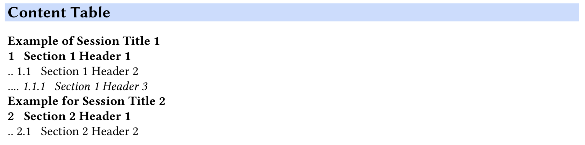
2.2: Create Cover Section¶
Add content to overview section with - report.overview.add_xx - add_section_title: add section title with ribbon - add_paragraph: add section paragraph
Below is a sample to create section with title Summary and add paragraph to it.
[3]:
### Create Cover Section
report.overview.add_section_title(text="Summary")
report.overview.add_paragraph(text="This is summary Info")
When generated, the overview section will be in the follow format:
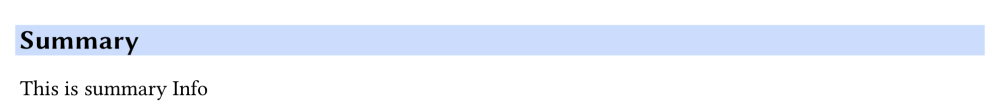
2.3: Create Content Section 1¶
Add content to detail section with - report.detail.add_xx - add_header_1: add section hearder 1 - add_header_2: add section hearder 2 - add_header_3: add section hearder 3
Below is a sample to create header Section 1 and add paragraph to it.
[4]:
### Create Contents Section - Header
report.detail.add_section_title(text="Example of Section Title 1")
#### Header Level 1 and it paragraph
report.detail.add_header_level_1(text='Section 1 Header 1')
report.detail.add_paragraph(text="This is content Info of header 1")
#### Header Level 2 and it paragraph
report.detail.add_header_level_2(text='Section 1 Header 2')
report.detail.add_paragraph(text="This is content Info of header 2")
#### Header Level 3 and it paragraph
report.detail.add_header_level_3(text='Section 1 Header 3')
report.detail.add_paragraph(text="This is content Info of header 3")
When generated, the detail section 1 will be in the follow format:
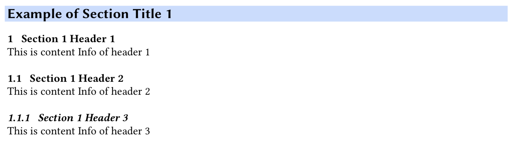
2.4: Create Content Section 2¶
Add content to detail section with - report.detail.add_xx - add_new_page: add new page in PDF - add_paragraph_title: add paragraph hearder
Below is a sample to create header Section 2 and add paragraph to it.
[5]:
### Create Contents Section - more
report.detail.add_new_page()
report.detail.add_section_title("Example for Section Title 2")
#### Header Level 1
report.detail.add_header_level_1(text='Section 2 Header 1')
### Add Level 2 and it paragraph
report.detail.add_header_level_2(text='Section 2 Header 2')
report.detail.add_paragraph(text="Some desc on header 2 in section 2 ...")
### Add another paragraph title
report.detail.add_paragraph_title(text='Paragraph Title inside section 2 header 2')
report.detail.add_paragraph(text="Another disc under paragraph title ...")
When generated, the detail section 2 will be in the follow format:
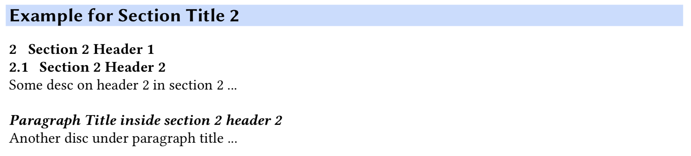
Step 3: Generate the report¶
Finally, call generate with writer object to compile the report.
Below is sample to generate report in PDF format:
[6]:
from xai.formatter import PdfWriter
report.generate(writer=PdfWriter(name='first-sample-report', path='./sample_output'))
print("report generated : %s/sample/output/first-sample-report.pdf" % os.getcwd())
report generated : /Users/i062308/Development/Explainable_AI/tutorials/formatter/portable_document/sample/output/first-sample-report.pdf
(B) Contents Examples¶
The following section introduces a default design of report, which includes the following parts and each will be shown with a sample dummy data: - 0. Cover page (display at the beginning of the report but generated at the end of whole process) - 1. Data Analysis - 2. Feature Analysis - 3. Training Analysis - 3.1 Hyperparameter Tuning - 3.2 Learning Curve (for deep learning) - 4. Evaluation Analysis - 5. Recommendataion Analysis (TBE)
First load sample data and create a report object :)
[7]:
import json
import sys
from pathlib import Path
sys.path.append('../../../')
import numpy as np
import pandas as pd
### Load Data
training_file_name = './../sample_data/titanic.csv'
data = pd.read_csv(training_file_name)
### Add dummy birthday to demonstrate datetime presentation
bday = []
for i in range(len(data)):
year = np.random.randint(low=1960, high=1979)
month = np.random.randint(low=1, high=12)
day = np.random.randint(low=1, high=28)
bday.append("%s" % (10000 * year + 100 * month + day))
data['Birthday'] = bday
label_column = 'Survived'
print(data.describe)
<bound method NDFrame.describe of PassengerId Survived Pclass \
0 1 0 3
1 2 1 1
2 3 1 3
3 4 1 1
4 5 0 3
.. ... ... ...
886 887 0 2
887 888 1 1
888 889 0 3
889 890 1 1
890 891 0 3
Name Sex Age SibSp \
0 Braund, Mr. Owen Harris male 22.0 1
1 Cumings, Mrs. John Bradley (Florence Briggs Th... female 38.0 1
2 Heikkinen, Miss. Laina female 26.0 0
3 Futrelle, Mrs. Jacques Heath (Lily May Peel) female 35.0 1
4 Allen, Mr. William Henry male 35.0 0
.. ... ... ... ...
886 Montvila, Rev. Juozas male 27.0 0
887 Graham, Miss. Margaret Edith female 19.0 0
888 Johnston, Miss. Catherine Helen "Carrie" female NaN 1
889 Behr, Mr. Karl Howell male 26.0 0
890 Dooley, Mr. Patrick male 32.0 0
Parch Ticket Fare Cabin Embarked Birthday
0 0 A/5 21171 7.2500 NaN S 19711019
1 0 PC 17599 71.2833 C85 C 19650717
2 0 STON/O2. 3101282 7.9250 NaN S 19760919
3 0 113803 53.1000 C123 S 19721004
4 0 373450 8.0500 NaN S 19680621
.. ... ... ... ... ... ...
886 0 211536 13.0000 NaN S 19661005
887 0 112053 30.0000 B42 S 19710223
888 2 W./C. 6607 23.4500 NaN S 19650916
889 0 111369 30.0000 C148 C 19640724
890 0 370376 7.7500 NaN Q 19750302
[891 rows x 13 columns]>
[8]:
from xai.data.constants import DATATYPE
from xai.data import DataUtil
from xai.model.interpreter import FeatureInterpreter
from xai.formatter import Report
report = Report(name='Simple Report')
print(report)
<xai.formatter.report.base.Report object at 0x10862cef0>
When generated, the report name is use as page header:
1. Data Analysis¶
The section includes all the information for data analysis. By default, it should have the following information: - Class distribution (for classification problem) - Data field attribute - Data field value distribution - Missing value check
Let’s add paragraph to begin with.
[9]:
### Create Data Analysis Section
report.detail.add_new_page()
report.detail.add_section_title("Example for Data Analysis ")
### Add Header Level 1
report.detail.add_header_level_1(text='Data Analysis')
When generated, the detail data analysis section will be in the follow format:
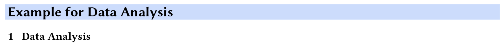
1.1 Class Distribution¶
This section displays the distribution of each class given a label. It’s for classification problem. The detail is created with add_dataset_distribution.
A sample is shown as follow:
[10]:
### Add Header Level 2
report.detail.add_header_level_2(text='Data Class Distribution')
### Add Dataset distribution
label_distributions = DataUtil.get_label_distribution(data=data, label=label_column)
report.detail.add_data_set_distribution(label_distributions)
When generated, the data class distribution content will be in the follow format:
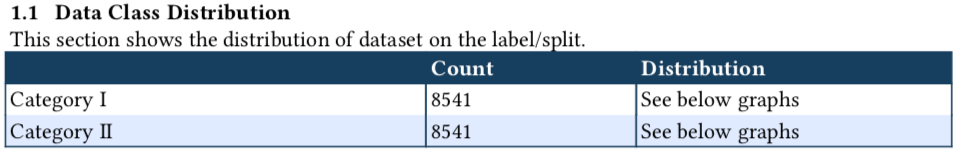
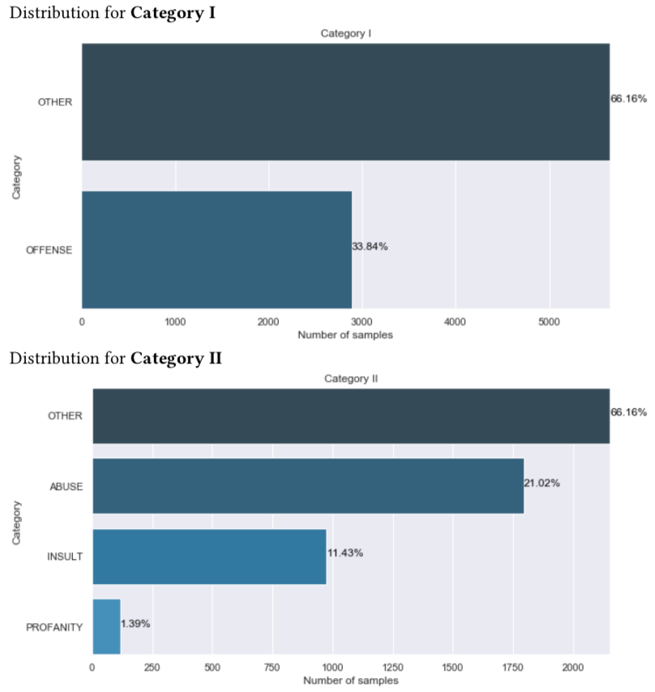
1.1.1 Retrieve data type and statictis¶
This section displays the attribute for all data fields.
First get the data type and statistic as shown as follow:
[11]:
### Get data types
feature, valid_feature_names, valid_feature_types, meta = DataUtil.get_column_types(data=data,
threshold=0.3,
label=label_column)
### Get Data Stats
stats = DataUtil.get_data_statistics(data=data,
feature_names=valid_feature_names,
feature_types=valid_feature_types,
label=label_column)
../../../xai/data/helper.py:148: UserWarning: Warning: the feature [PassengerId] is suspected to be identifierable feature.
[Examples]: [1, 2, 3, 4, 5]
'[Examples]: %s\n' % (column, col_data.tolist()[:5]))
../../../xai/data/helper.py:148: UserWarning: Warning: the feature [Ticket] is suspected to be identifierable feature.
[Examples]: ['A/5 21171', 'PC 17599', 'STON/O2. 3101282', '113803', '373450']
'[Examples]: %s\n' % (column, col_data.tolist()[:5]))
../../../xai/data/helper.py:148: UserWarning: Warning: the feature [Cabin] is suspected to be identifierable feature.
[Examples]: [nan, 'C85', nan, 'C123', nan]
'[Examples]: %s\n' % (column, col_data.tolist()[:5]))
../../../xai/data/helper.py:223: SettingWithCopyWarning:
A value is trying to be set on a copy of a slice from a DataFrame
See the caveats in the documentation: http://pandas.pydata.org/pandas-docs/stable/user_guide/indexing.html#returning-a-view-versus-a-copy
data[column][data[column].isnull()] = 'NAN'
1.2 Data Field Attribute¶
This section displays the attribute for all data fields. The content is created with add_data_attributes.
The data passed in should be a dict. For each item, the key is the field name, the value is a second-level dict with items of which key is the attribute name and value is the attribute value.
A sample is shown as follow:
[12]:
### Add Header Level 2
report.detail.add_header_level_2(text='Data Field Attribute')
### Data Field Attribute
report.detail.add_data_attributes(meta)
When generated, the data field attribute detail will be in the follow format:
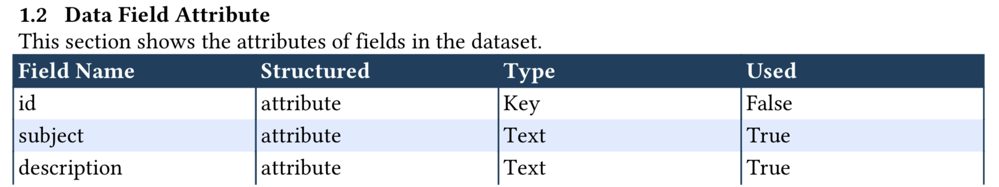
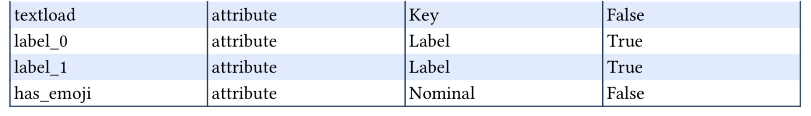
1.3 Missing Value Check¶
This section displays the missing value checking. The content is created with add_data_missing_value.
The function takes in two inputs: one is missing_count which is a dict with items of which key is field name and value is the count or ratio of missing attribute.
A sample is shown as follow:
[13]:
### Add Header Level 2
report.detail.add_header_level_2(text='Data Missing Value Check')
### Missing value count
missing_count, total_count = \
DataUtil.get_missing_value_count(data=data,
feature_names=valid_feature_names,
feature_types=valid_feature_types)
report.detail.add_data_missing_value(missing_count=dict(missing_count),
total_count=total_count)
When generated, the data missing value check detail will be in the follow format:
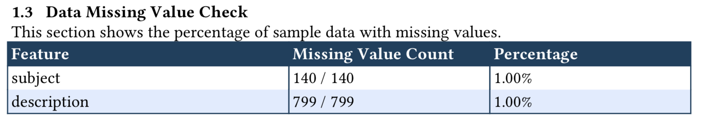
1.4 Data Field Distribution¶
This section displays value distribution for data fields. xai.data_explorer package analyzes the distribution for the following types: - Categorical - Numerical - Free Text - Datetime
[14]:
### Add Header Level 2
report.detail.add_header_level_2(text='Data Field Distribution')
### Data Field Distribution Desc
report.detail.add_paragraph(text='This section displays distribution for categorical fields, numerical fields and text fields.')
When generated, the data field distribution header will be in the follow format:
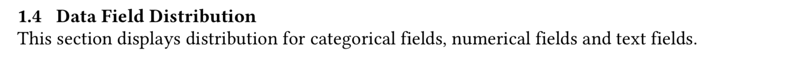
1.4.1 Categorical Field Distribution¶
For categorical field, the value frequency under each label will be shown. See details about xai.data_explorer.categorical_analyzer.
[15]:
### Add Header Level 3
report.detail.add_header_level_3(text='Categorical Field Distribution')
### Categorical field distribution
for field_name in feature[DATATYPE.CATEGORY]:
labelled_stats, all_stats = stats[field_name]
report.detail.add_categorical_field_distribution(field_name=field_name, field_distribution=labelled_stats)
When generated, the catagorical field distribution detail will be in the follow format:
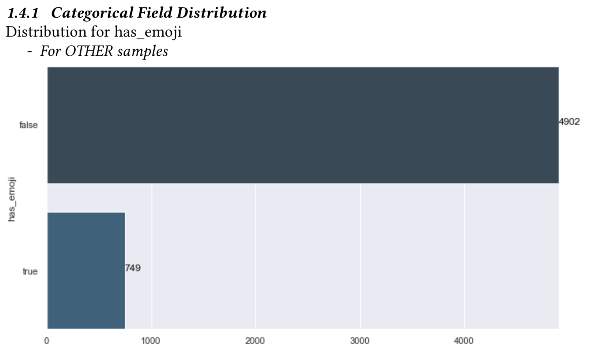
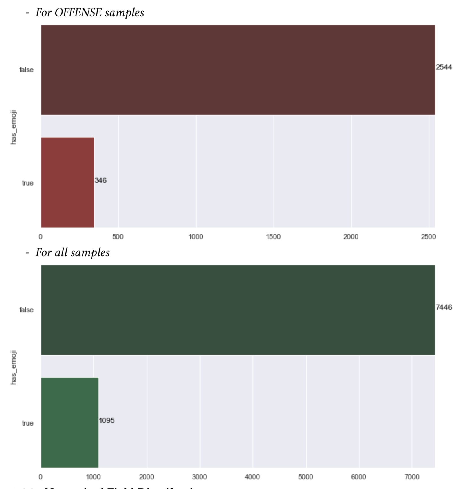
1.4.2 Numerical Field Distribution¶
For numerical fields, the value distribution will shown as histogram and KDE curve. Main statistics (e.g. max, min, mean, median) will also be shown. See details about xai.data_explorer.numerical_analyzer.
[16]:
### Add Header Level 3
report.detail.add_header_level_3(text='Numerical Field Distribution')
### Numerical field distribution
for field_name in feature[DATATYPE.NUMBER]:
labelled_stats, all_stats = stats[field_name]
report.detail.add_numeric_field_distribution(field_name=field_name, field_distribution=labelled_stats)
When generated, the numerical field distribution detail will be in the follow format:
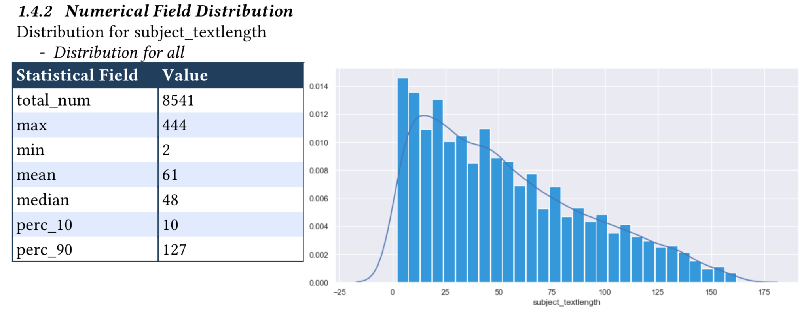
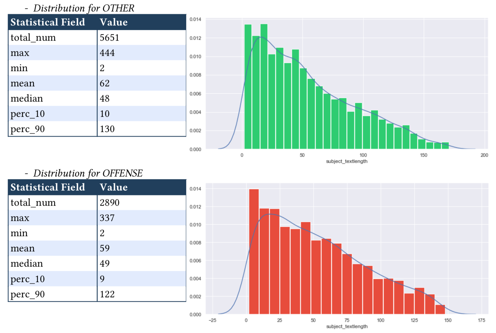
1.4.3 Text Field Distribution¶
For text fields, a woldcloud will be shown with a size weigthed on the TF-IDF. Besides, Contextual AI has some pre-defined text patterns, such as Email, URL, Datetime. If the text field is analyzed with Contextual AI Data Explorer package, the percentage of documents contains each pattern will also be analyzed and displayed. See details about xai.data_explorer.text_analyzer.
[17]:
### Add Header Level 3
report.detail.add_header_level_3(text='Text Field Distribution')
### Text field distribution
for field_name in feature[DATATYPE.FREETEXT]:
labelled_stats, all_stats = stats[field_name]
report.detail.add_text_field_distribution(field_name=field_name, field_distribution=labelled_stats)
When generated, the text field distribution detail will be in the follow format:
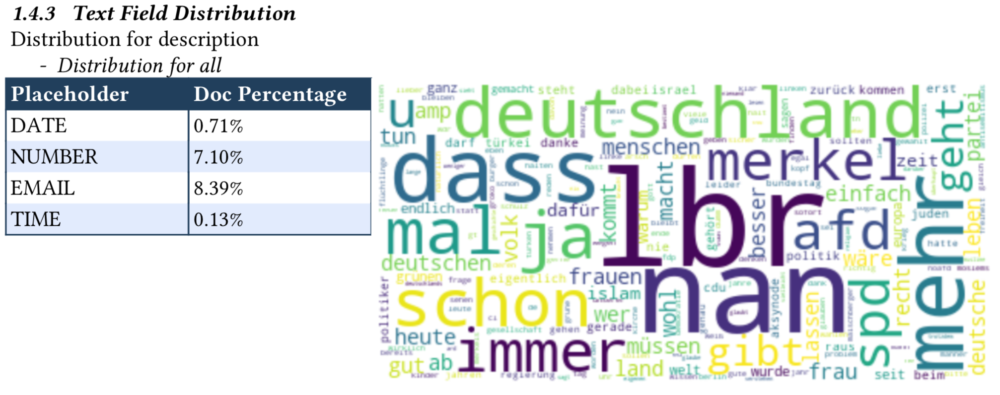
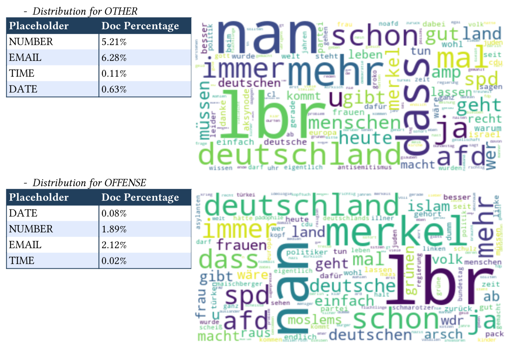
1.4.4 DateTime Field Distribution¶
For datetime fields, count on months/years will be show in an barchart. See details about xai.data_explorer.datetime_analyzer.
[18]:
### Add Header Level 3
report.detail.add_header_level_3(text='Datetime Field Distribution')
### Datetime field distribution
for field_name in feature[DATATYPE.DATETIME]:
labelled_stats, all_stats = stats[field_name]
report.detail.add_datetime_field_distribution(field_name=field_name, field_distribution=labelled_stats)
When generated, the date time field distribution detail will be in the follow format:
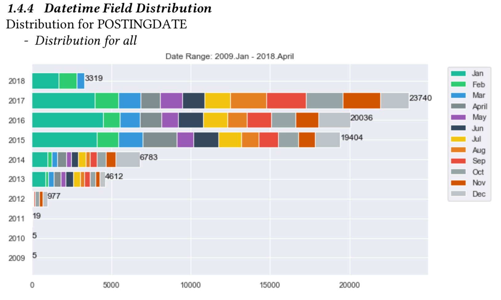
1.5: Generate the report¶
At any moment, call generate with writer object to compile the report. Since, no content is added to overview section - no overview section been generated.
Below is sample to generate report in PDF format:
[19]:
from xai.formatter import PdfWriter
report.generate(writer=PdfWriter(name='sample-report-with-data-section-only', path='./sample_output'))
print("report generated : %s/sample_output/sample-report-with-data-section-only.pdf" % os.getcwd())
report generated : /Users/i062308/Development/Explainable_AI/tutorials/formatter/portable_document/sample_output/sample-report-with-data-section-only.pdf
2. Feature Analysis¶
This section shows analysis for feature importance. It shows as a barchart and feature importance above a thresdhold as a table. A sample is shown as below:
[20]:
### Create Feature Analysis Section as new page
report.detail.add_new_page()
report.detail.add_section_title("Example for Feature Analysis ")
### Add Header Level 1
report.detail.add_header_level_1(text='Feature Analysis')
When generated, the content feature analysis section will be in the follow format:
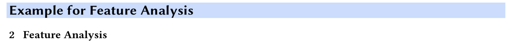
2.1 Feature Importance¶
[21]:
### Add Header Level 2
report.detail.add_header_level_2(text='Feature Importance')
### Feature Importance
path = Path('./../sample_data/model.pkl')
model = pd.read_pickle(str(path))
path = Path('./../sample_data/train_data.csv')
data = pd.read_csv(str(path))
# -- csv including header --
feature_names = data.columns
fi = FeatureInterpreter(feature_names=feature_names)
rank = fi.get_feature_importance_ranking(trained_model=model, train_x=data, method='default')
report.detail.add_feature_importance(importance_ranking=rank, importance_threshold=0.005)
When generated, the feature importance detail will be in the follow format:
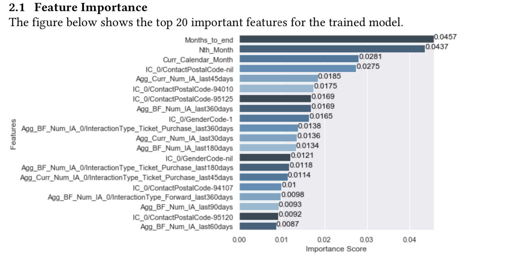
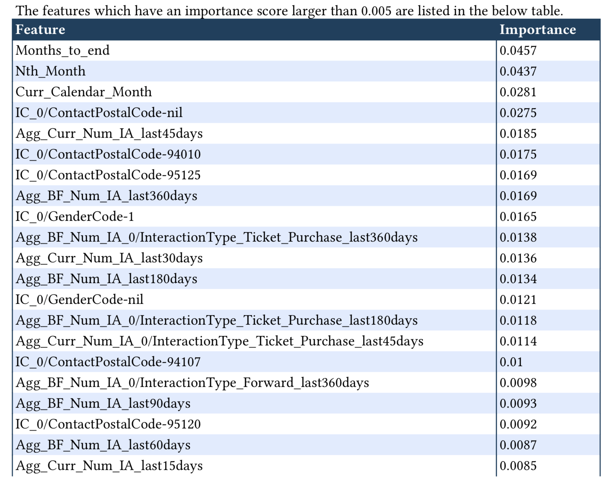
2.2: Generate the report¶
At any moment, you may call generate with writer object to compile the report. Since, no content is added to overview section - no overview section been generated.
Below is sample to generate report in PDF format:
[22]:
from xai.formatter import PdfWriter
report.generate(writer=PdfWriter(name='sample-report-with-data-and-feature-section', path='./sample_output'))
print("report generated : %s/sample_output/sample-report-with-data-and-feature-section.pdf" % os.getcwd())
report generated : /Users/i062308/Development/Explainable_AI/tutorials/formatter/portable_document/sample_output/sample-report-with-data-and-feature-section.pdf
3. Training Analysis¶
This section shows training analysis, and presents information while training process.
[23]:
### Create Training Analysis Section as new page
report.detail.add_new_page()
report.detail.add_section_title("Example for Training Analysis ")
### Add Header Level 1
report.detail.add_header_level_1(text='Training Analysis')
When generated, the detail Training analysis section will be in the follow format:
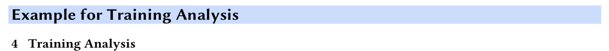
3.1 Hyperparameter Tuning¶
The section shows model metric monitoring while tuning hyperparameters.
[24]:
### Add Header Level 2
report.detail.add_header_level_2(text='Hyperparameter Tuning')
report.detail.add_paragraph(text='this is dummy model, no trained with titanic dataset')
### Hyperparameter Tuning
with open('./../sample_data/hyperparameter_tuning.json', 'r') as f:
hyperparameter_tuning = json.load(f)
print('search_space:',hyperparameter_tuning['search_space'])
print('best_idx:',hyperparameter_tuning['best_idx'])
print('history [first 2 samples]:',
{k:hyperparameter_tuning['history'][k] for k in list(hyperparameter_tuning['history'].keys())[:2]})
print('benchmark_metric:',hyperparameter_tuning['benchmark_metric'])
print('benchmark_threshold:',hyperparameter_tuning['benchmark_threshold'])
print('non_hyperopt_score:',hyperparameter_tuning['non_hyperopt_score'])
report.detail.add_hyperparameter_tuning(history=hyperparameter_tuning['history'],
best_idx=hyperparameter_tuning['best_idx'],
search_space=hyperparameter_tuning['search_space'],
benchmark_metric=hyperparameter_tuning['benchmark_metric'],
benchmark_threshold=hyperparameter_tuning['benchmark_threshold'],
non_hyperopt_score=hyperparameter_tuning['non_hyperopt_score'])
search_space: {'NumTrees': '(20, 500)', 'RandomState': '(200, 1000)', 'MaxFeature': 'auto', 'MinSplit': 2, 'MaxDepth': ['None', 4, 5, 6]}
best_idx: 3
history [first 2 samples]: {'0': {'params': {'MaxDepth': 6, 'MaxFeature': 'auto', 'MinSampleSplit': 2, 'NumTrees': 448.0, 'RandomState': 685.0}, 'val_scores': {'accuracy': 0.075, 'f1': 0.07493575942773803, 'precision': 0.4217391304347826, 'recall': 0.4342105263157895, 'auc': 0.4009502923976608}}, '1': {'params': {'MaxDepth': 6, 'MaxFeature': 'auto', 'MinSampleSplit': 2, 'NumTrees': 351.0, 'RandomState': 351.0}, 'val_scores': {'accuracy': 0.0875, 'f1': 0.08748415771107138, 'precision': 0.44510335479498475, 'recall': 0.44078947368421056, 'auc': 0.40570175438596495}}}
benchmark_metric: accuracy
benchmark_threshold: 0.8
non_hyperopt_score: 0.8166666666666667
When generated, the hyperparameter tuning detail will be in the follow format:
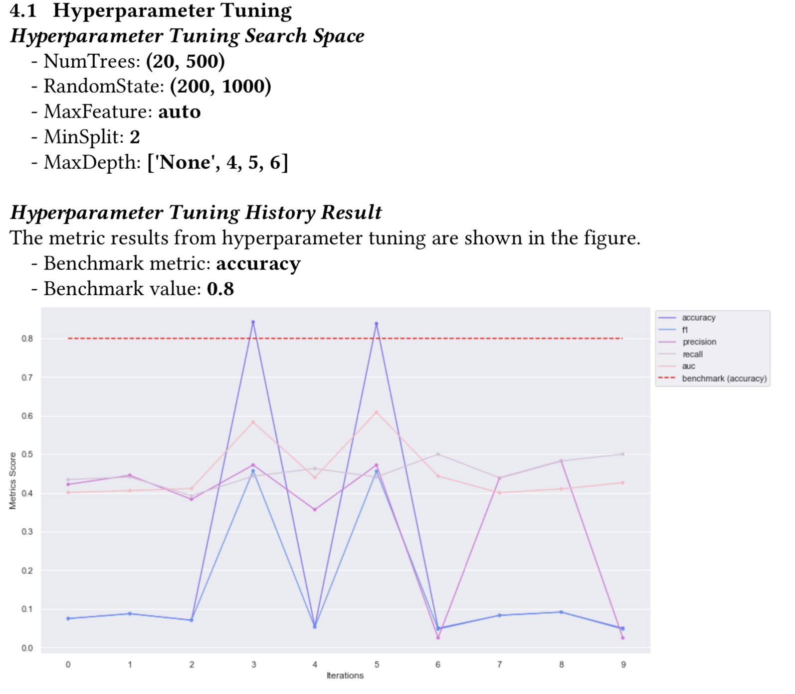
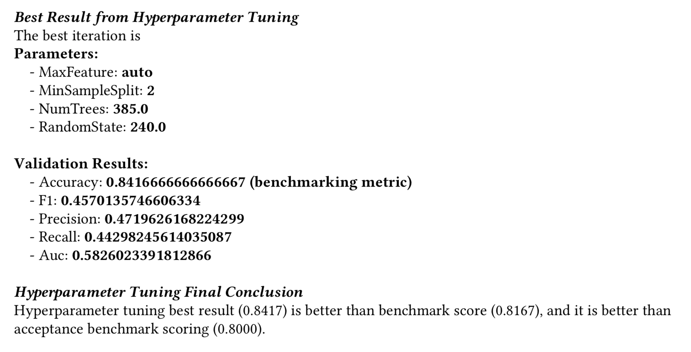
3.2 Learning Curve (for deep learning)¶
The section shows model metric monitoring while training (a.k.a learning curve).
[25]:
### Add Header Level 2
report.detail.add_header_level_2(text='Deep Learning Training')
### Learning Curve
with open('./../sample_data/learning_curve.json', 'r') as f:
learning_curve = json.load(f)
print('best_idx:',learning_curve['best_idx'])
print('history [first 2 samples]:',
{k:learning_curve['history'][k] for k in list(learning_curve['history'].keys())[:2]})
print('benchmark_metric:',learning_curve['benchmark_metric'])
print('benchmark_threshold:',learning_curve['benchmark_threshold'])
print('training_params:',learning_curve['training_params'])
report.detail.add_learning_curve(history=learning_curve['history'],
best_idx=learning_curve['best_idx'],
benchmark_metric=learning_curve['benchmark_metric'],
benchmark_threshold=learning_curve['benchmark_threshold'],
training_params=learning_curve['training_params'])
best_idx: 0
history [first 2 samples]: {'0': {'val_scores': {'loss': 0.769659698009491, 'accuracy': 0.9515625238418579, 'precision': 0.0, 'recall': 0.0, 'f1': 0.0, 'auc': 0.5082619190216064}}, '1': {'val_scores': {'loss': 0.7648007273674011, 'accuracy': 0.948437511920929, 'precision': 0.0, 'recall': 0.0, 'f1': 0.0, 'auc': 0.4868066608905792}}}
benchmark_metric: accuracy
benchmark_threshold: 0.9
training_params: {'Sequence time step': 15, 'Sequence feature length': 125, 'Attribute feature length': 294, 'RNN layer number': 2, 'RNN keep probability': 0.8, 'DNN layer number': 1, 'DNN regularizer': 'L2 (scale: 0.06)'}
When generated, the learning curve detail will be in the follow format:
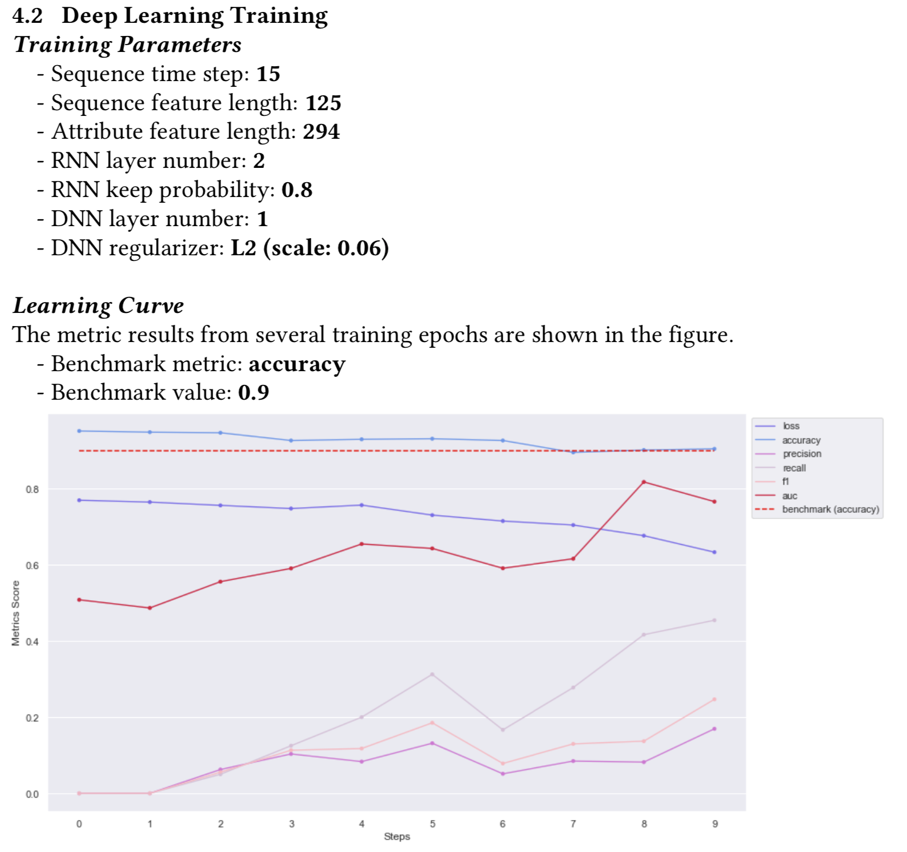
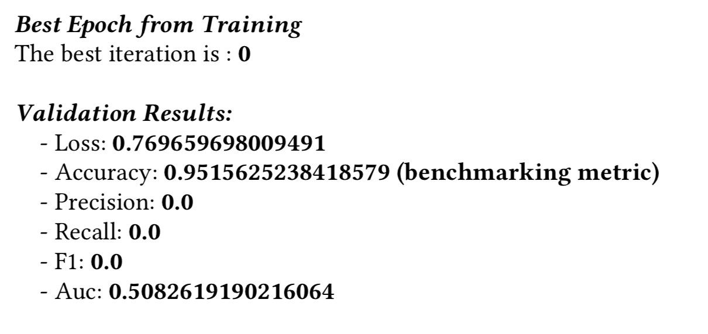
3.3: Generate the report¶
At any moment, you may call generate with writer object to compile the report. Since, no content is added to overview section - no overview section been generated.
Below is sample to generate report in PDF format:
[26]:
from xai.formatter import PdfWriter
report.generate(writer=PdfWriter(name='sample-report-with-data-feature-training-section', path='./sample_output'))
print("report generated : %s/sample_output/sample-report-with-data-feature-training-section.pdf" % os.getcwd())
report generated : /Users/i062308/Development/Explainable_AI/tutorials/formatter/portable_document/sample_output/sample-report-with-data-feature-training-section.pdf
4. Evaluation Analysis¶
The section provides analysis on evaluation results. It is divided into 2 types: binary classification and multi-class classification. For each case, the following contents are displayed: - numeric metrics - confusion matrix - confidence distribution - reliability diagram (binary classification only)
[27]:
### Create Evaluation Analysis Section as new page
report.detail.add_new_page()
report.detail.add_section_title("Example for Evaluation Analysis ")
When generated, the detail Evaluation analysis section will be in the follow format:
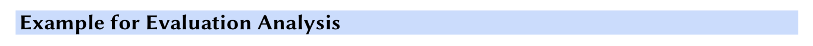
4.1 Binary Classification¶
[28]:
### Add Header Level 1
report.detail.add_header_level_1(text='Binary Classification Evaluation Analysis')
When generated, the binary classification header will be in the follow format:
4.1.1 Numeric Metric¶
[29]:
### Add Header Level 2
report.detail.add_header_level_2(text='Overall Result')
### Numeric Metric
with open('./../sample_data/binary_evaluation_results.json', 'r') as f:
eval_result = json.load(f)
splits = eval_result.keys()
numeric_metrics_list = []
for split in splits:
label_eval_result = eval_result[split]
del(label_eval_result['vis_result'])
numeric_metrics_list.append((split, label_eval_result))
print(numeric_metrics_list)
report.detail.add_binary_class_evaluation_metric_results(numeric_metrics_list,
notes='The section shows general results like accuracy, precision, recall.')
[('train', {'accuracy': 0.9627912640571594, 'precision': 0.02666666731238365, 'recall': 0.008547008968889713, 'f1': 0.012944985181093216, 'auc': 0.4609035849571228, 'CM': [[7890, 73], [232, 2]]}), ('validation', {'accuracy': 0.9576036930084229, 'precision': 0.0, 'recall': 0.0, 'f1': 0.0, 'auc': 0.4362090826034546, 'CM': [[1039, 14], [32, 0]]}), ('test', {'accuracy': 0.962892472743988, 'precision': 0.10000000149011612, 'recall': 0.032258063554763794, 'f1': 0.04878048971295357, 'auc': 0.4682953953742981, 'CM': [[1011, 9], [30, 1]]})]
When generated, the numeric metric detail will be in the follow format:
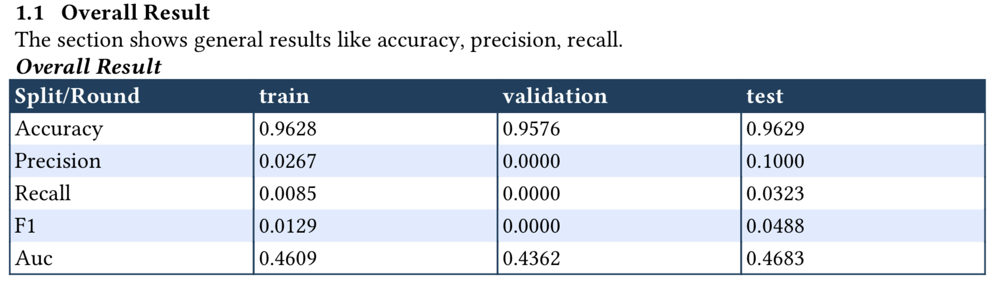
4.1.2 Confusion Matrix¶
[30]:
### Add Header Level 2
report.detail.add_header_level_2(text='Confusion Matrix')
### Confusion Matrix
with open('./../sample_data/binary_evaluation_results.json', 'r') as f:
eval_result = json.load(f)
splits = eval_result.keys()
confusion_matrix_list = []
for split in splits:
label_eval_result = eval_result[split]
confusion_matrix_list.append((split, {"labels": ["Negative", "Positive"], "values": label_eval_result["CM"]}))
print(confusion_matrix_list)
report.detail.add_confusion_matrix_results(confusion_matrix_tuple=confusion_matrix_list)
[('train', {'labels': ['Negative', 'Positive'], 'values': [[7890, 73], [232, 2]]}), ('validation', {'labels': ['Negative', 'Positive'], 'values': [[1039, 14], [32, 0]]}), ('test', {'labels': ['Negative', 'Positive'], 'values': [[1011, 9], [30, 1]]})]
When generated, the confusion matrix detail will be in the follow format:
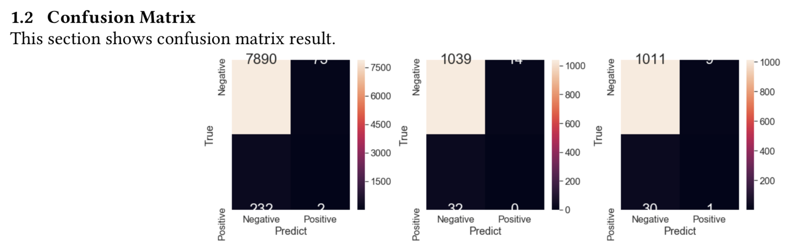
4.1.3 Confidence Distribution¶
[31]:
### Add Header Level 2
report.detail.add_header_level_2(text='Confidence Distribution')
### Confidence Distribution
with open('./../sample_data/binary_evaluation_results.json', 'r') as f:
eval_result = json.load(f)
splits = eval_result.keys()
probability_plot_list = []
for split in splits:
vis_result = eval_result[split]['vis_result']
probability_plot_list.append((split, vis_result))
print('Split name:',split)
for key, value in vis_result.items():
print(' - %s:'%key, type(value), value[:3])
report.detail.add_binary_class_confidence_distribution(probability_plot_list)
Split name: train
- probability: <class 'list'> [[0.3770688772201538, 0.6229311227798462], [0.41023093461990356, 0.5897691249847412], [0.4822709560394287, 0.5177291035652161]]
- gt: <class 'list'> [0, 0, 0]
Split name: validation
- probability: <class 'list'> [[0.44429945945739746, 0.5557004809379578], [0.5415756702423096, 0.45842432975769043], [0.46190792322158813, 0.5380920171737671]]
- gt: <class 'list'> [0, 0, 0]
Split name: test
- probability: <class 'list'> [[0.4792706072330475, 0.5207294225692749], [0.541035532951355, 0.4589644968509674], [0.47570356726646423, 0.5242964029312134]]
- gt: <class 'list'> [0, 0, 0]
When generated, the confidence distribution will be in the follow format:
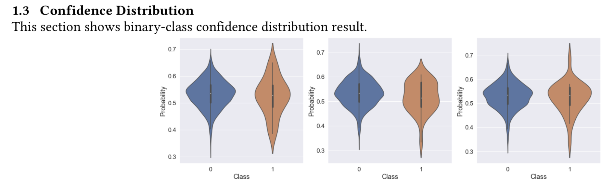
4.1.4 Reliability Digram¶
[32]:
### Add Header Level 2
report.detail.add_header_level_2(text='Reliability Diagram')
### Reliability Diagram
with open('./../sample_data/binary_evaluation_results.json', 'r') as f:
eval_result = json.load(f)
splits = eval_result.keys()
probability_plot_list = []
for split in splits:
label_eval_result = eval_result[split]['vis_result']
probability_plot_list.append((split, vis_result))
print('Split name:',split)
for key, value in vis_result.items():
print(' - %s:'%key, type(value), value[:3])
report.detail.add_binary_class_reliability_diagram(probability_plot_list)
Split name: train
- probability: <class 'list'> [[0.4792706072330475, 0.5207294225692749], [0.541035532951355, 0.4589644968509674], [0.47570356726646423, 0.5242964029312134]]
- gt: <class 'list'> [0, 0, 0]
Split name: validation
- probability: <class 'list'> [[0.4792706072330475, 0.5207294225692749], [0.541035532951355, 0.4589644968509674], [0.47570356726646423, 0.5242964029312134]]
- gt: <class 'list'> [0, 0, 0]
Split name: test
- probability: <class 'list'> [[0.4792706072330475, 0.5207294225692749], [0.541035532951355, 0.4589644968509674], [0.47570356726646423, 0.5242964029312134]]
- gt: <class 'list'> [0, 0, 0]
When generated, the reliability diagram will be in the follow format:
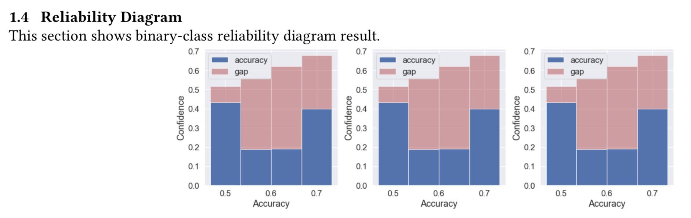
4.2 Multi-class Classification¶
[33]:
### Add Header Level 1
report.detail.add_header_level_1(text='Multi-class Classification Evaluation Analysis')
with open('./../sample_data/multi_evaluation_results.json', 'r') as f:
eval_result = json.load(f)
label_key = 'label_1'
label_eval_result = eval_result[label_key]
vis_result = label_eval_result['vis_result']
del (label_eval_result['vis_result'])
When generated, the multi-class classification header will be in the follow format:
4.2.1 Numeric Metric¶
[34]:
### Add Header Level 2
report.detail.add_header_level_2(text='Overall Result')
### Numeric Metrics
print(label_eval_result)
report.detail.add_multi_class_evaluation_metric_results(('', label_eval_result),
notes='The section shows general results like accuracy, precision, recall.')
{'f1_score': {'class': {'OTHER': 0.8106060606060606, 'PROFANITY': 0.0, 'ABUSE': 0.43083003952569177, 'INSULT': 0.03529411764705882}, 'average': 0.6306263638637892}, 'recall': {'class': {'OTHER': 0.9214208826695371, 'PROFANITY': 0.0, 'ABUSE': 0.3707482993197279, 'INSULT': 0.018633540372670808}, 'average': 0.6894586894586895}, 'precision': {'class': {'OTHER': 0.7235841081994928, 'PROFANITY': 0.0, 'ABUSE': 0.5141509433962265, 'INSULT': 0.3333333333333333}, 'average': 0.6246700003863861}, 'CM': {'labels': ['OTHER', 'PROFANITY', 'ABUSE', 'INSULT'], 'values': [[856, 0, 67, 6], [16, 0, 4, 0], [185, 0, 109, 0], [126, 0, 32, 3]]}}
When generated, the multi-class numeric metric will be in the follow format:
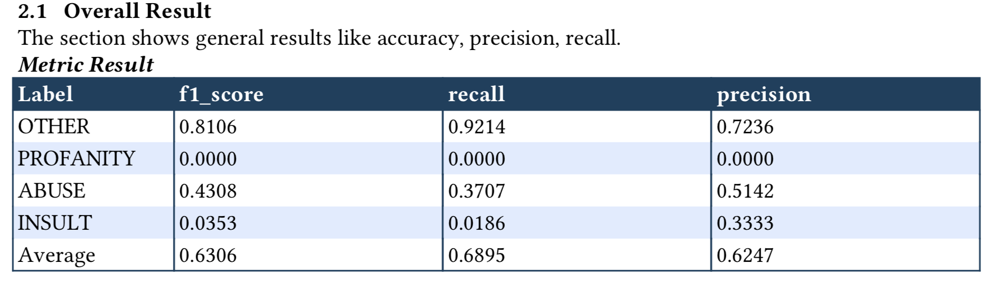
4.2.2 Confusion Matrix¶
[35]:
### Add Header Level 2
report.detail.add_header_level_2(text='Confusion Matrix')
### Confusion Matrix
print(label_eval_result['CM'])
report.detail.add_confusion_matrix_results(confusion_matrix_tuple=[('', label_eval_result['CM'])])
{'labels': ['OTHER', 'PROFANITY', 'ABUSE', 'INSULT'], 'values': [[856, 0, 67, 6], [16, 0, 4, 0], [185, 0, 109, 0], [126, 0, 32, 3]]}
When generated, the multi-class confusion matrix will be in the follow format:
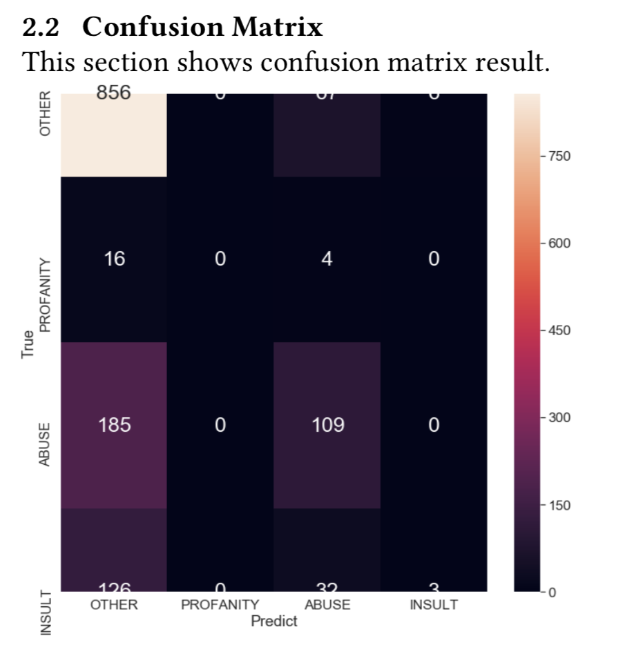
4.2.3 Confidence Distribution¶
[36]:
### Add Header Level 2
report.detail.add_header_level_2(text='Confidence Distribution')
### Probability Plot
for class_name, class_value in vis_result.items():
print('Class:',class_name)
for key, value in class_value.items():
print(' - %s:'%key, type(value), value[:4])
report.detail.add_multi_class_confidence_distribution([('', vis_result)])
Class: OTHER
- gt: <class 'list'> ['OTHER', 'OTHER', 'INSULT', 'OTHER']
- probability: <class 'list'> [0.8916968852945533, 0.6004393436260155, 0.6709159285290026, 0.8776989624158892]
Class: PROFANITY
- gt: <class 'list'> []
- probability: <class 'list'> []
Class: ABUSE
- gt: <class 'list'> ['ABUSE', 'INSULT', 'OTHER', 'INSULT']
- probability: <class 'list'> [0.3997915305239952, 0.4321055255119627, 0.4272960507553194, 0.9063218066182464]
Class: INSULT
- gt: <class 'list'> ['INSULT', 'OTHER', 'OTHER', 'OTHER']
- probability: <class 'list'> [0.4748126330295362, 0.4603932866512729, 0.4276429140622332, 0.3630582608615315]
When generated, the multi-class confidence distribution will be in the follow format:
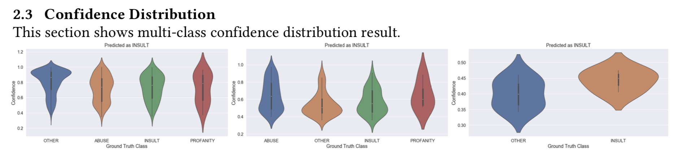
4.3: Generate the report¶
At any moment, you may call generate with writer object to compile the report. Since, no content is added to overview section - no overview section been generated.
Below is sample to generate report in PDF format:
[37]:
from xai.formatter import PdfWriter
report.generate(writer=PdfWriter(name='sample-report-with-data-feature-training-evaluation-section'))
print("report generated : %s/sample-report-with-data-feature-training-evaluation-section.pdf" % os.getcwd())
../../../xai/graphs/graph_generator.py:39: RuntimeWarning: invalid value encountered in double_scalars
ave_acc = np.sum(accuracy[condition]) / sample_num
/Users/i062308/anaconda3/envs/xai-py37/lib/python3.7/site-packages/numpy/core/fromnumeric.py:3118: RuntimeWarning: Mean of empty slice.
out=out, **kwargs)
/Users/i062308/anaconda3/envs/xai-py37/lib/python3.7/site-packages/numpy/core/_methods.py:85: RuntimeWarning: invalid value encountered in double_scalars
ret = ret.dtype.type(ret / rcount)
report generated : /Users/i062308/Development/Explainable_AI/tutorials/formatter/portable_document/sample-report-with-data-feature-training-evaluation-section.pdf
5. Recommendataion Analysis (Optional)¶
There is a set of content that special design to display summary info, such as: - Summary Notes - Model Information - Timing - Data Summary - Evaluation Result
Please take note that: * It DOES NOT need to be called at the end of pipeline * It can be added in both overview and content section
Below is sample to demostrate - add summary info to overview section:
5.1: Summary Notes¶
Add overview section and simple summary as paragraph into overview.
[38]:
report.overview.add_section_title(text="Overview")
summary_notes_text = '''This report serves as a demo for the Contextual AI library.
The data used to generate this report is not from any specific use case.
Sorry for any inconsistency in the report data.
'''
report.overview.add_paragraph(summary_notes_text)
When generated, the summary paragraph (example as first content) will be in the follow format:
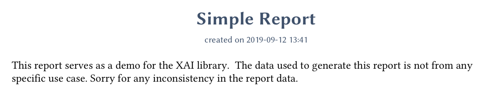
5.2: Model Information¶
The content is created by add_model_info_summary. It is designed to display the basid model information, such as model_id, model_version or any information specific to this training.
The data should be passed in as a list of tuple, each tuple will be a key-value pair. If no data is provided to the content, usecase_name, version, usecase_team will be displayed as a default information. A sample is shown as follows:
[39]:
model_info = [('Model ID','12345678'),
('Model Version','v6'),
('Scenario ID','111222333444555'),
('Notes','This model is created as a beta version.')
]
report.overview.add_model_info_summary(model_info=model_info)
When generated, the Model Info summary will be in the follow format:
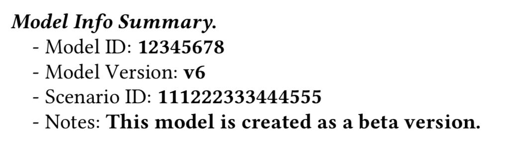
5.3: Timing¶
The content is created by add_training_timing. It is designed to display the time spend at each stage of the training process, such as data processing, feature extraction, training model and evaluation.
The data should be passed in as a list of tuple, each tuple will be a pair of stage name and time spend in seconds. A sample is shown as follows:
[40]:
timing = [('Data Preprocessing', 1000),
('Feature Engineering', 10000),
('Training', 200200),
('Evaluation', 30303)]
report.overview.add_training_timing(timing=timing)
When generated, the Training Timing summary will be in the follow format:
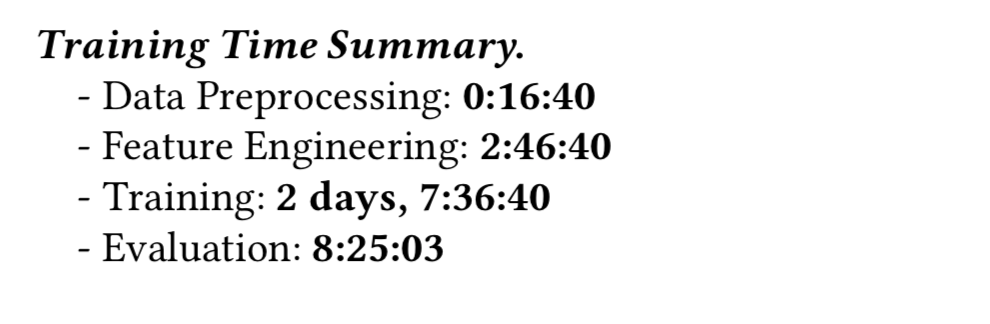
5.4: Data Summary¶
The content is created by add_data_set_summary. It is designed to display the quantity of samples used in each stage of training (a.k.a training, validation, testing). It can also be used to display the distribution among different classes.
The data should be passed in as a list of tuple, each tuple will be a pair of dataset name and quantity. A sample is shown as follows:
[41]:
data_summary = [('training', 10000),
('validation', 2000),
('testing', 1000)]
report.overview.add_data_set_summary(data_summary=data_summary)
When generated, the Dataset summary will be in the follow format:
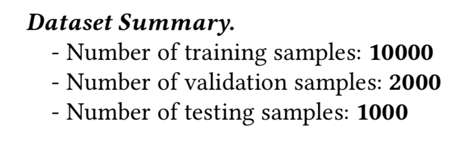
5.5: Evaluation Result Summary¶
The content is created by add_evaluation_result_summary. It is designed to display the summary on evaluation result in a high-level. Only numeric metrics will be displayed, anything involves a list won’t be shown in summary. For example, for multi-class classification, only the average metrics will be shown, also metric such like ROC and confusion matrix won’t be shown here.
The data should be passed in as a list of dict, each dict includes evaluation on one objective. For example, in a multi-label classication or multi-task machine learning problem, each dict will only regards on one label or one task. The function takes in as many as dict and display each of them in sequence.
For each dict, each key-value pair should about a metric or an attribute. - If the value is a number or a str, the key-value pair will be displayed - If the value is a list, it will be ignored in display. - If the value is dict, the function will search the keyword average to display the average metric; otherwise, search the keyword class and calculate a macro average if it’s a list of float. For other cases, the function will ignore this item.
A sample is shown as follows:
[42]:
import json
with open('./../sample_data/evaluation_result_summary.json','r') as f:
evaluation_result_data = json.load(f)
print(evaluation_result_data)
report.overview.add_evaluation_result_summary(evaluation_result=evaluation_result_data)
[{'field': 'Category I', 'labels': 'OTHER, OFFENSE', 'f1_score': {'class': {'OTHER': 0.7871690427698573, 'OFFENSE': 0.504739336492891}, 'average': 0.6916176820280062}, 'recall': {'class': {'OTHER': 0.8320775026910656, 'OFFENSE': 0.44842105263157894}, 'average': 0.7022792022792023}, 'precision': {'class': {'OTHER': 0.7468599033816425, 'OFFENSE': 0.5772357723577236}, 'average': 0.6894728220167127}}, {'field': 'Category II', 'labels': 'OTHER, PROFANITY, ABUSE, INSULT', 'f1_score': {'class': {'OTHER': 0.8106060606060606, 'PROFANITY': 0.0, 'ABUSE': 0.43083003952569177, 'INSULT': 0.03529411764705882}, 'average': 0.6306263638637892}, 'recall': {'class': {'OTHER': 0.9214208826695371, 'PROFANITY': 0.0, 'ABUSE': 0.3707482993197279, 'INSULT': 0.018633540372670808}, 'average': 0.6894586894586895}, 'precision': {'class': {'OTHER': 0.7235841081994928, 'PROFANITY': 0.0, 'ABUSE': 0.5141509433962265, 'INSULT': 0.3333333333333333}, 'average': 0.6246700003863861}}]
When generated, the Evaluation Result summary will be in the follow format:
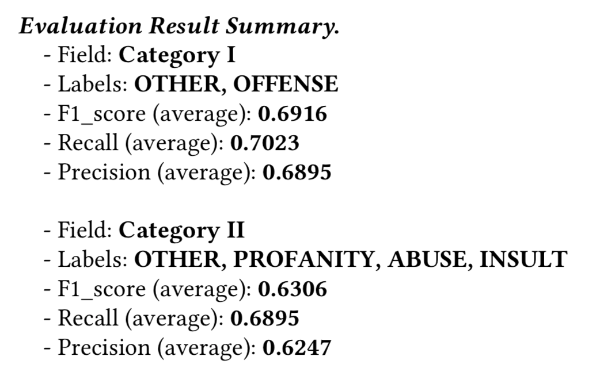
5.6: Generate the report¶
At any moment, you may call generate with writer object to compile the report. The program will put all the contents added to report section (overview and content) and create content table (if enabled).
Below is sample to generate report in PDF format:
[43]:
from xai.formatter import PdfWriter
report.generate(writer=PdfWriter(name='sample-report-final-with-summary', path='./sample_output'))
print("report generated : %s/sample_output/sample-report-final-with-summary.pdf" % os.getcwd())
report generated : /Users/i062308/Development/Explainable_AI/tutorials/formatter/portable_document/sample_output/sample-report-final-with-summary.pdf